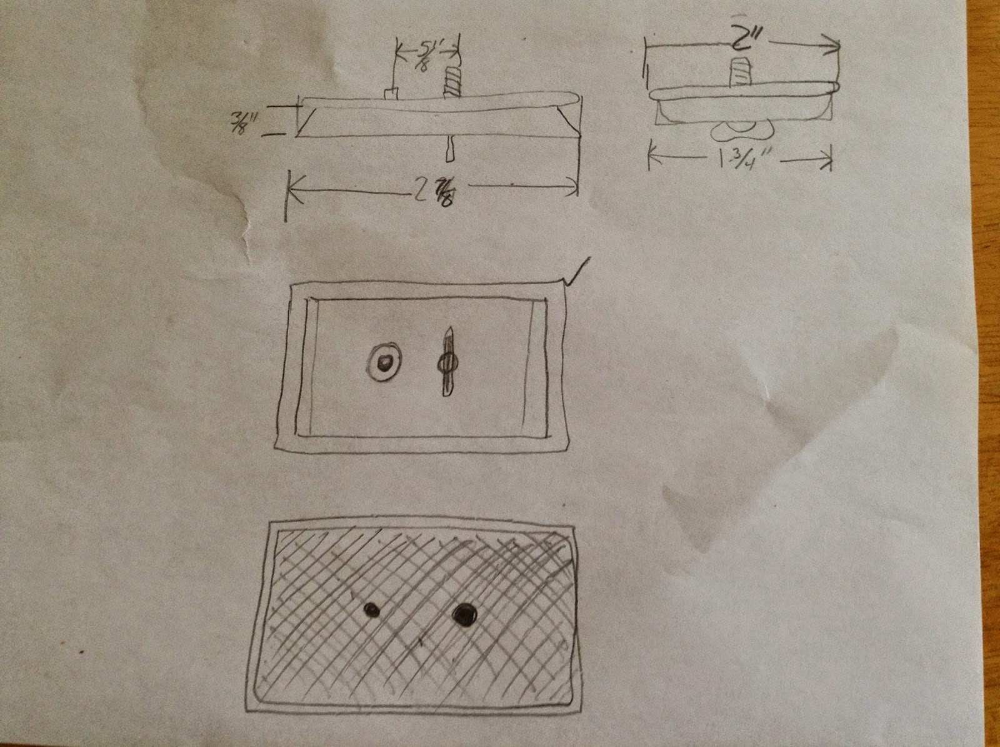
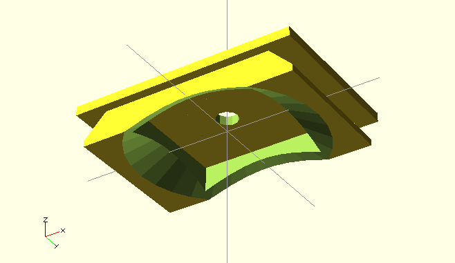
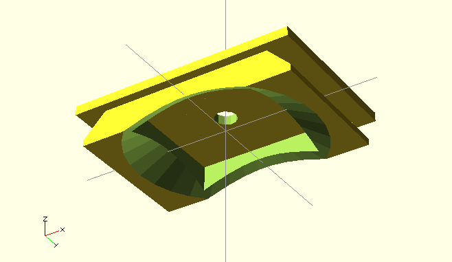
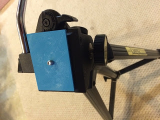

Tripod Quick release mount
Fri 13 June 2014 by Dr. Dirk ColbryI got a tripod for my birthday this year. It is a really nice one, but I lost the quick release mount. Here is a picture with a quick release mount from another tripod. Obviously, it doesn't fit:

After some shopping online this one looks fairly good, but possibly not the right size.
http://www.tripodquickrelease.com/Acme_Lite_Quick_Releases.htm
So, I took some measurements and came up with this drawing

My goal is to see if I can print this out using a 3D printer. When I started this project I was planning to use the one in the engineering department where I work, but now I have an Ultimaker 2. I know I need an stl file but I was not sure the best way to generate one. After some quick internet searching I found openscad.
I downloaded the software and found the wiki quick start page. It did not take long to figure out the simple language. I started by making a cube and then creating the top. Then I made objects to cut out the inside and the bevels. Here is the resulting model.
 

The hardest part was to get the surface normals for the wedge shape object to face in the right direction. However, once I drew out my points and used the right hand rule things settled in nicely. Openscad outputs stl files so all I did was import it into the cura program to generate the gcode for my printer and save it to the SD card to print. The first print was a little too close to my tolerances and I could not get it to fit inside the tripod. However, with some simple modifications to the openscad file I was able to generate a quick release mount that I think looks quite nice and works well:

A future design would fix the bottom to the mount somehow. I posted the STL and OpenScad files on YouMagin.org if you are interested in makeing your own:
https://www.youmagine.com/designs/tripod-quick-release-mount
- Dirk
Blogpost migrated from Blogger using custom python script. Comment on errors below.